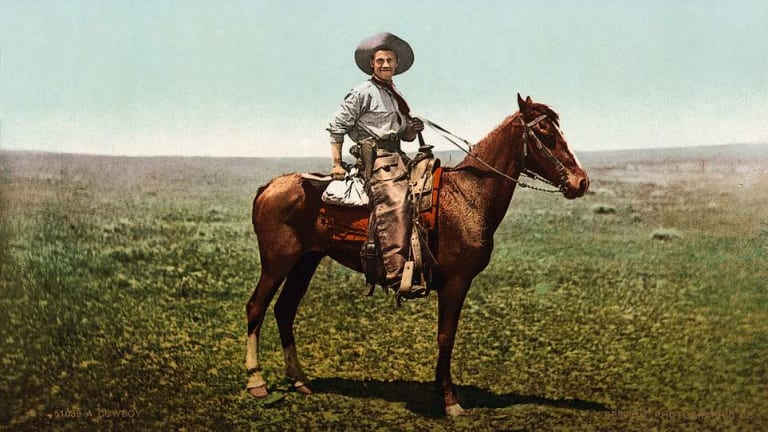

Theme: GAUCHO
Gaucho are cowboys from Brazil, Argentina,
and Uruguay. Gauchos' work involves moving
herds of
cattle from one place to another.
A cowboy is an animal herder who tends cattle on ranches in North America, traditionally on horseback, and often performs a multitude of other ranch-related tasks. The historic American cowboy of the late 19th century arose from the vaquero traditions of northern Mexico and became a figure of special significance and legend. A subtype, called a wrangler, specifically tends the horses used to work cattle. In addition to ranch work, some cowboys work for or participate in rodeos.
Cowgirls, first defined as such in the late 19th century, had a less-well documented historical role, but in the modern world work at identical tasks and have obtained considerable respect for their achievements. Cattle handlers in many other parts of the world, particularly South America and Australia, perform work similar to the cowboy.
Culture
American cowboys were drawn from multiple sources. By the late 1860s, following the American Civil War and the expansion of the cattle industry, former soldiers from both the Union and Confederacy came west, seeking work, as did large numbers of restless white men in general.[56] A significant number of African-American freedmen also were drawn to cowboy life, in part because there was not quite as much discrimination in the west as in other areas of American society at the time.[57] A significant number of Mexicans and American Indians already living in the region also worked as cowboys.
Geography, climate and cultural traditions caused differences to develop in cattle-handling methods and equipment from one part of the United States to another. The period between 1840 and 1870 marked a mingling of cultures when English and French-descended people began to settle west of the Mississippi River and encountered the Spanish-descended people who had settled in the parts of Mexico that later became Texas and California.

What clothes did cowboys wear?
With indications of special and exceptional
distinction, the high cowboy attire
of the Old
West: a
wide-brimmed hat,
a regular shirt worn under a cowboy waistcoat
and waistcoat, cotton or wool
trousers
half-covered with leather caps, distinct high boots
with spurs, and a large silk handkerchief
that is
worn around...
Thank you for your attention!
MADE:Eldorado.JM